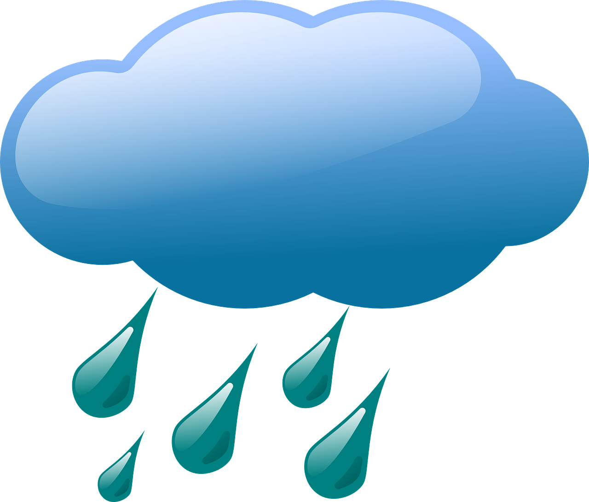
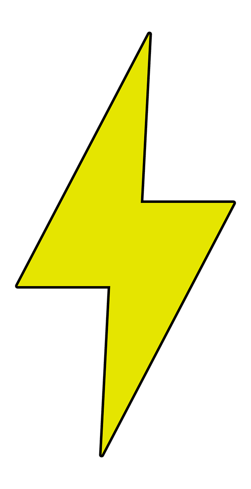
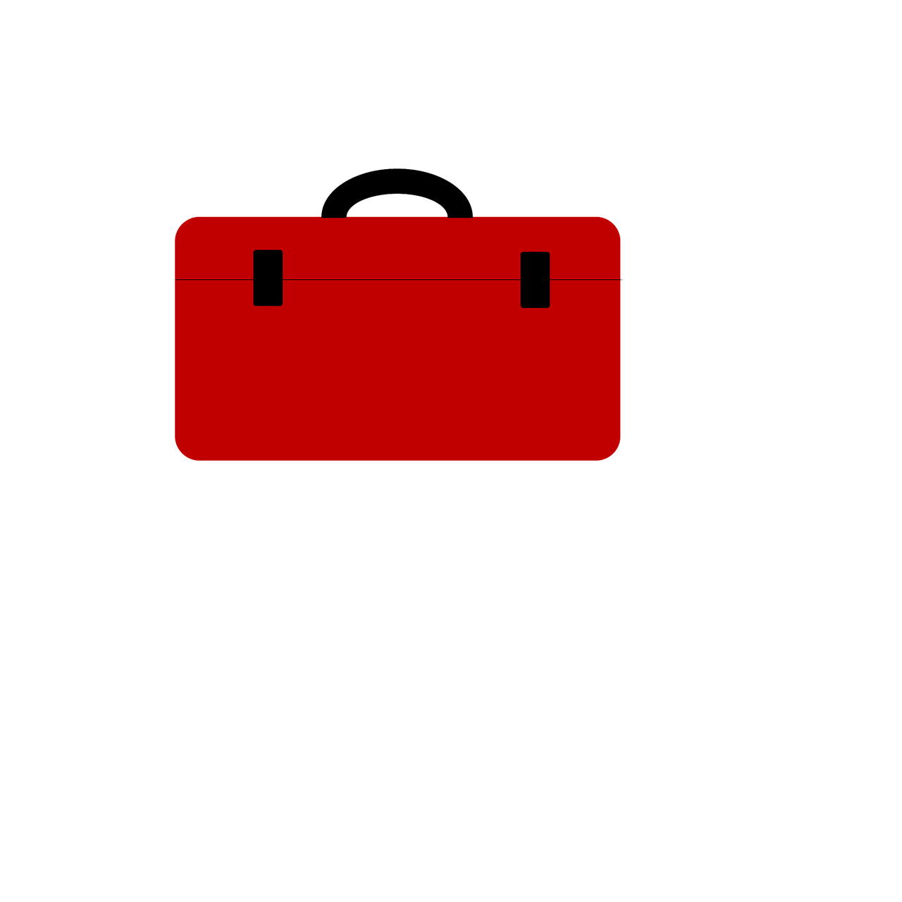

How Electric Shock Happens
Electricity flows in closed circuits. A shock occurs when the body becomes part of the circuit. This can happen by:
- Touching both wires of an electrical circuit.
- Touching one wire and ground.
- Touching a metal object in contact with a live wire.
more information
Injury severity depends on:
- The amount of current.
- The path through the body.
- The duration of contact.
Other influencing factors:
- Frequency of the current.
- Heart cycle phase.
- General health of the person.
Even low voltages can be fatal due to longer contact time.
In Case of Electrical Emergency
- Call 911 immediately.
- If safe, turn off power before touching the victim.
- If not, use a non-conductive object (like a dry board).
- If not breathing and you're CPR trained, begin CPR immediately.
Common Electrical Hazards
- Jewellery can conduct electricity. Remove it before working.
- Damaged cords, exposed wires, and overloaded outlets.
- Using metal ladders (use wood or fiberglass).
- Working in wet/damp conditions.
- Improper use of extension cords or power strips.
- Unqualified personnel performing electrical work.
Prevention Guidelines
- Only qualified electrical technicians should perform electrical repairs.
- All equipment must be UL listed.
- Inspect tools, cords, PPE before use.
- Use insulated tools and GFCI protection.
- Tag out / lock out circuits before repairs.
- Do not daisy-chain power strips or cords.
- Ensure extension cord thickness matches device requirement.
- Maintain 3 ft clearance around electrical panels.
Power Strip & Cord Usage
- Power strips must have built-in circuit breakers.
- Never connect a power strip to another (no daisy-chaining).
- Use power strips for portable use, not permanent wiring.
- Replace frayed/damaged cords immediately.
- Do not run cords through doors, windows, or under rugs.
Working in Wet Environments
- Use GFCI-protected outlets or circuit breakers.
- GFCI devices shut off power in 1/40th of a second.
Circuit Protection Devices
- Fuses melt when overloaded.
- Circuit breakers trip to stop unsafe flow.
- GFCIs protect people by detecting imbalance in current.
Access and Signage Requirements
- Mark rooms with live electrical parts to restrict unqualified access
- Live parts operating at 50 volts or more must be guarded by:
- Restricted rooms/vaults.
- Physical barriers or elevation.
Special Case: Electrophoresis Equipment
- Involves electrical, chemical, and radiological hazards.
- Ensure all hazards are addressed prior to use.
- Use shielded equipment, PPE, and proper training.
Checklist for Electrical Safety

- Remove jewellery
- Use proper PPE
- Inspect tools and cords
- Confirm GFCI usage
- Do not use wet hands or work in damp areas without protection
- Follow lock-out/tag-out protocols
- Avoid overloading circuits
- Maintain clean and dry workspace